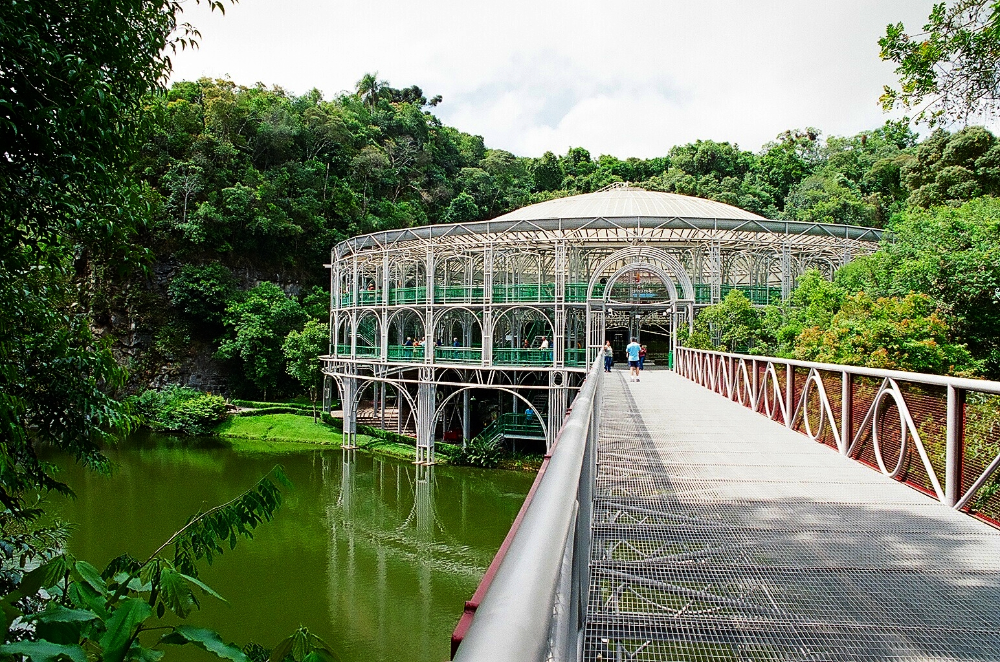
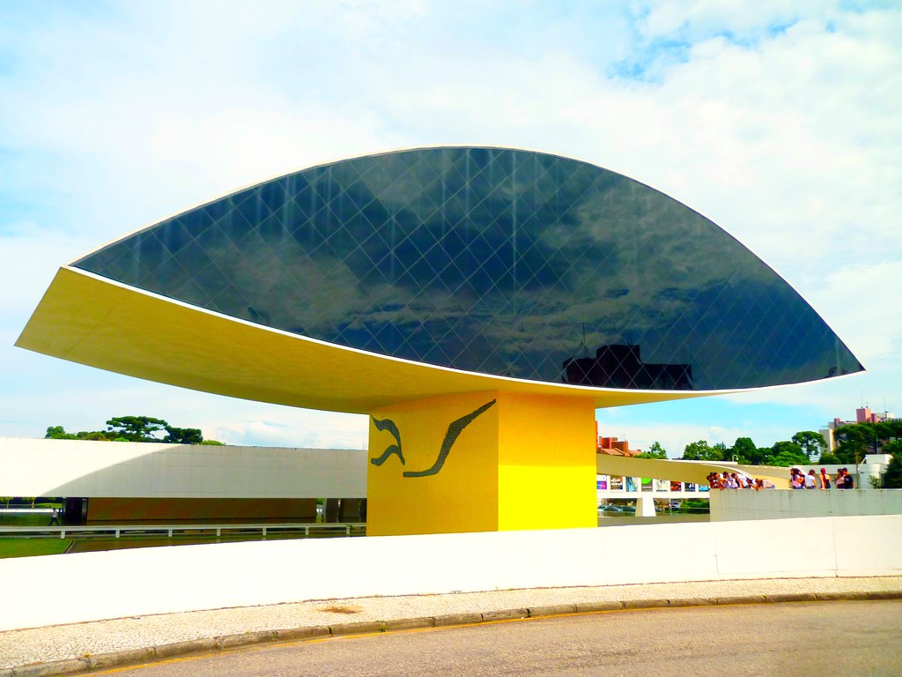
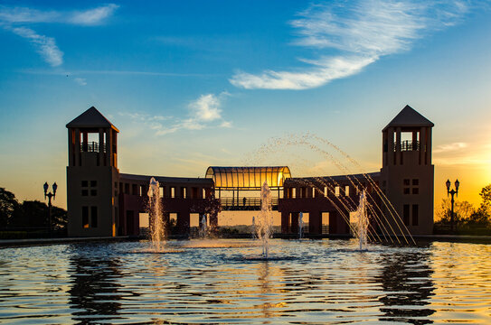

Welcome to Curitiba
Curitiba, the capital of the state of Paraná in Brazil, is renowned for its innovative urban planning, lush parks, and vibrant cultural scene. Visitors flock to Curitiba for its unique blend of modernity and nature, making it a favorite destination for travelers seeking both adventure and relaxation.
The city boasts an impressive public transportation system. Curitiba’s integrated bus system is considered one of the best in the world, featuring dedicated bus lanes and efficient routes.
Coritiba FootBall Club, commonly known as Coritiba and colloquially referred to as "Coxa", is a Brazilian football club from Curitiba, capital city of the Brazilian state of Paraná. Founded in 1909 by German immigrants, it is the oldest football club and the club with most titles in the state.
Club Athletico Paranaense (commonly known as Athletico Paranaense and formerly known as Atlético Paranaense) is a Brazilian football team from the city of Curitiba, capital city of the Brazilian state of Paraná, founded on 26 March 1924.
The team’s most important titles have been winning the 2001 Série A, the Copa Sudamericana in 2018 and 2021, and the Copa do Brasil in 2019. In the Copa Libertadores, they have finished runner-up twice, in 2005 and 2022.
They are considered the strongest team in Brazil outside of the Big 12, at times even surpassing them.
Popular Attractions
Jardim Botânico

The Botanical Garden of Curitiba is a beautiful park featuring a striking glasshouse, inspired by the Crystal Palace in London. The garden is a haven for nature lovers and provides a tranquil escape from the city.
Learn more
Opera de Arame

The Wire Opera House is a unique architectural marvel made entirely of steel tubes and glass. It hosts a variety of performances and is set in a lush park, making it a must-visit for art and architecture enthusiasts.
Learn more
Museu Oscar Niemeyer

Dedicated to the works of the famous Brazilian architect Oscar Niemeyer, this museum features stunning modernist architecture and a diverse collection of art. The museum is affectionately known as the "Eye Museum" due to its distinctive shape.
Learn more
Parque Tanguá

Tanguá Park offers breathtaking views, beautiful gardens, and impressive waterfalls. It's an ideal spot for a relaxing day out, with plenty of trails for hiking and cycling.
Learn more